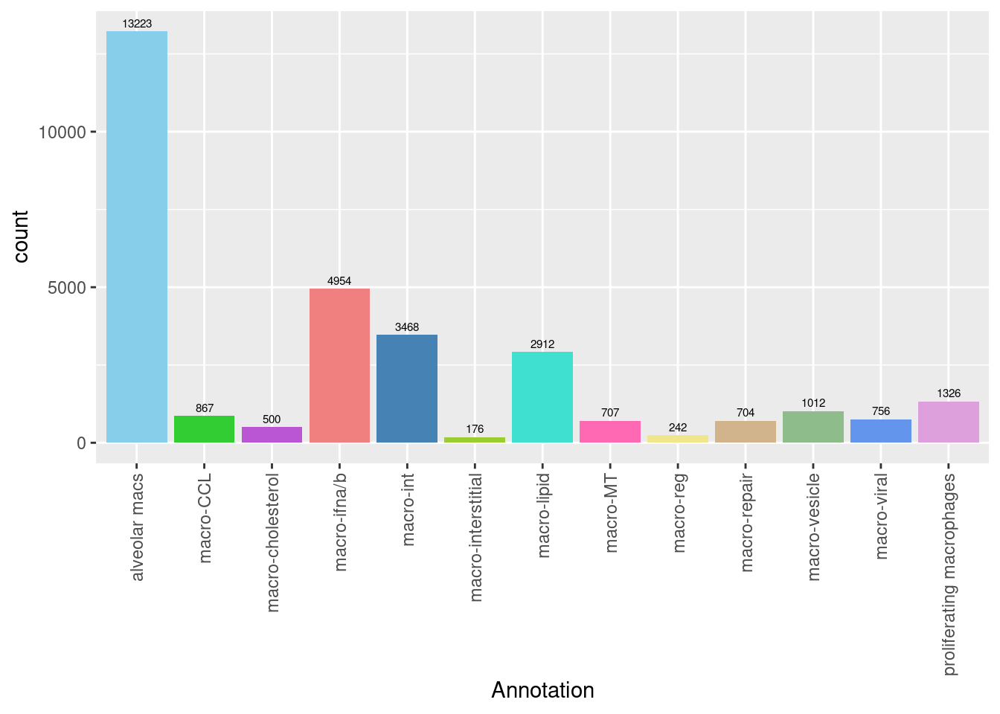
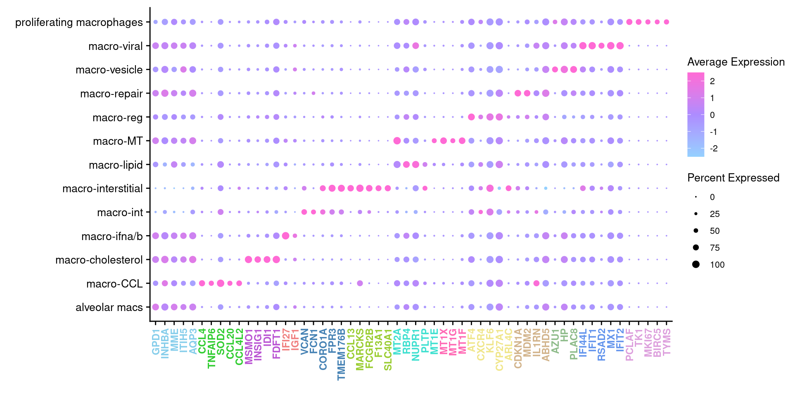
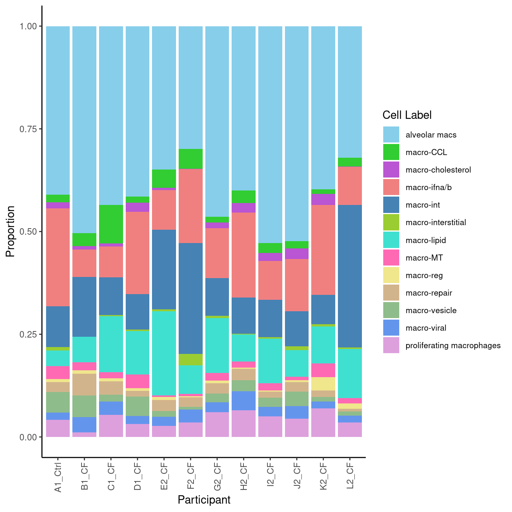
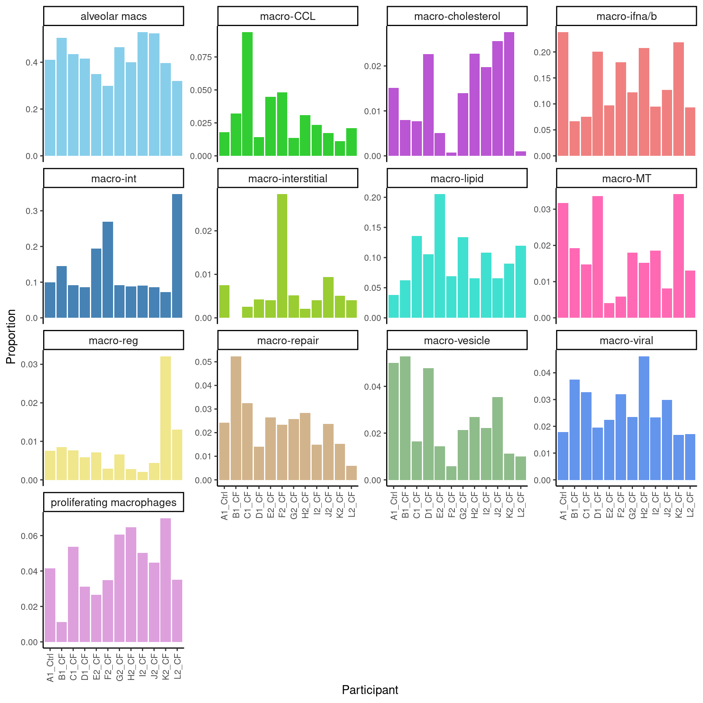

Analysis of scRNA-seq & CITE-seq Data Combined
Post-process Macrophage Sub-clustering Results
Jovana Maksimovic
December 19, 2022
Last updated: 2022-12-19
Checks: 7 0
Knit directory:
paed-cf-cite-seq/
This reproducible R Markdown analysis was created with workflowr (version 1.7.0). The Checks tab describes the reproducibility checks that were applied when the results were created. The Past versions tab lists the development history.
Great! Since the R Markdown file has been committed to the Git repository, you know the exact version of the code that produced these results.
Great job! The global environment was empty. Objects defined in the global environment can affect the analysis in your R Markdown file in unknown ways. For reproduciblity it’s best to always run the code in an empty environment.
The command set.seed(20210524) was run prior to running the code in the R Markdown file.
Setting a seed ensures that any results that rely on randomness, e.g.
subsampling or permutations, are reproducible.
Great job! Recording the operating system, R version, and package versions is critical for reproducibility.
Nice! There were no cached chunks for this analysis, so you can be confident that you successfully produced the results during this run.
Great job! Using relative paths to the files within your workflowr project makes it easier to run your code on other machines.
Great! You are using Git for version control. Tracking code development and connecting the code version to the results is critical for reproducibility.
The results in this page were generated with repository version e799f52. See the Past versions tab to see a history of the changes made to the R Markdown and HTML files.
Note that you need to be careful to ensure that all relevant files for the
analysis have been committed to Git prior to generating the results (you can
use wflow_publish or wflow_git_commit). workflowr only
checks the R Markdown file, but you know if there are other scripts or data
files that it depends on. Below is the status of the Git repository when the
results were generated:
Ignored files:
Ignored: .Rhistory
Ignored: .Rproj.user/
Ignored: analysis/obsolete/
Ignored: code/obsolete/
Ignored: data/190930_A00152_0150_BHTYCMDSXX/
Ignored: data/CellRanger/
Ignored: data/GSE127465_RAW/
Ignored: data/Homo_sapiens.gene_info
Ignored: data/SCEs/02_ZILIONIS.sct_normalised.SEU.rds
Ignored: data/SCEs/03_C133_Neeland.demultiplexed.SCE.rds
Ignored: data/SCEs/03_C133_Neeland.emptyDrops.SCE.rds
Ignored: data/SCEs/03_C133_Neeland.preprocessed.SCE.rds
Ignored: data/SCEs/03_CF_BAL_Pilot.CellRanger_v6.SCE.rds
Ignored: data/SCEs/03_CF_BAL_Pilot.emptyDrops.SCE.rds
Ignored: data/SCEs/03_CF_BAL_Pilot.preprocessed.SCE.rds
Ignored: data/SCEs/03_COMBO.clustered.SEU.rds
Ignored: data/SCEs/03_COMBO.clustered_annotated_macrophages_diet.SEU.rds
Ignored: data/SCEs/03_COMBO.clustered_annotated_others_diet.SEU.rds
Ignored: data/SCEs/03_COMBO.clustered_annotated_tcells_diet.SEU.rds
Ignored: data/SCEs/03_COMBO.clustered_diet.SEU.rds
Ignored: data/SCEs/03_COMBO.integrated.SEU.rds
Ignored: data/SCEs/03_COMBO.zilionis_mapped.SEU.rds
Ignored: data/SCEs/04_C133_Neeland.adt_dsb_normalised.rds
Ignored: data/SCEs/04_C133_Neeland.adt_integrated.rds
Ignored: data/SCEs/04_C133_Neeland.all_integrated.SEU.rds
Ignored: data/SCEs/04_CF_BAL_Pilot.CellRanger_v6.SCE.rds
Ignored: data/SCEs/04_CF_BAL_Pilot.emptyDrops.SCE.rds
Ignored: data/SCEs/04_CF_BAL_Pilot.preprocessed.SCE.rds
Ignored: data/SCEs/04_CF_BAL_Pilot.transfer_adt.SEU.rds
Ignored: data/SCEs/04_COMBO.clean_clustered.SEU.rds
Ignored: data/SCEs/04_COMBO.clean_clustered.SEU_bk.rds
Ignored: data/SCEs/04_COMBO.clean_integrated.SEU.rds
Ignored: data/SCEs/04_COMBO.clean_integrated.SEU_bk.rds
Ignored: data/SCEs/04_COMBO.clean_macrophages_diet.SEU.rds
Ignored: data/SCEs/04_COMBO.clean_others_diet.SEU.rds
Ignored: data/SCEs/04_COMBO.clean_tcells_diet.SEU.rds
Ignored: data/SCEs/04_COMBO.clustered.SEU.rds
Ignored: data/SCEs/04_COMBO.clustered_annotated_adt_diet.SEU.rds
Ignored: data/SCEs/04_COMBO.clustered_annotated_lung_diet.SEU.rds
Ignored: data/SCEs/04_COMBO.clustered_annotated_macrophages_diet.SEU.rds
Ignored: data/SCEs/04_COMBO.clustered_annotated_others_diet.SEU.rds
Ignored: data/SCEs/04_COMBO.clustered_annotated_tcells_diet.SEU.rds
Ignored: data/SCEs/04_COMBO.clustered_diet.SEU.rds
Ignored: data/SCEs/04_COMBO.integrated.SEU.rds
Ignored: data/SCEs/04_COMBO.macrophages_clustered.SEU.rds
Ignored: data/SCEs/04_COMBO.macrophages_integrated.SEU.rds
Ignored: data/SCEs/04_COMBO.others_clustered.SEU.rds
Ignored: data/SCEs/04_COMBO.others_integrated.SEU.rds
Ignored: data/SCEs/04_COMBO.tcells_clustered.SEU.rds
Ignored: data/SCEs/04_COMBO.tcells_integrated.SEU.rds
Ignored: data/SCEs/04_COMBO.zilionis_mapped.SEU.rds
Ignored: data/SCEs/05_CF_BAL_Pilot.transfer_adt.SEU.rds
Ignored: data/SCEs/05_COMBO.clean_clustered.SEU.rds
Ignored: data/SCEs/05_COMBO.clean_integrated.SEU.rds
Ignored: data/SCEs/05_COMBO.clean_macrophages_diet.SEU.rds
Ignored: data/SCEs/05_COMBO.clean_others_diet.SEU.rds
Ignored: data/SCEs/05_COMBO.clean_tcells_diet.SEU.rds
Ignored: data/SCEs/05_COMBO.clustered_annotated_adt_diet.SEU.rds
Ignored: data/SCEs/05_COMBO.clustered_annotated_lung_diet.SEU.rds
Ignored: data/SCEs/05_COMBO.clustered_annotated_macrophages_diet.SEU.rds
Ignored: data/SCEs/05_COMBO.clustered_annotated_others_diet.SEU.rds
Ignored: data/SCEs/05_COMBO.clustered_annotated_tcells_diet.SEU.rds
Ignored: data/SCEs/05_COMBO.macrophages_clustered.SEU.rds
Ignored: data/SCEs/05_COMBO.macrophages_integrated.SEU.rds
Ignored: data/SCEs/05_COMBO.others_clustered.SEU.rds
Ignored: data/SCEs/05_COMBO.others_integrated.SEU.rds
Ignored: data/SCEs/05_COMBO.tcells_clustered.SEU.rds
Ignored: data/SCEs/05_COMBO.tcells_integrated.SEU.rds
Ignored: data/SCEs/06_COMBO.clean_clustered.DIET.rds
Ignored: data/SCEs/06_COMBO.clean_clustered.SEU.rds
Ignored: data/SCEs/06_COMBO.clean_integrated.SEU.rds
Ignored: data/SCEs/06_COMBO.clean_macrophages_diet.SEU.rds
Ignored: data/SCEs/06_COMBO.clean_others_diet.SEU.rds
Ignored: data/SCEs/06_COMBO.clean_tcells_diet.SEU.rds
Ignored: data/SCEs/06_COMBO.macrophages_clustered.SEU.rds
Ignored: data/SCEs/06_COMBO.macrophages_clustered_dbl.SEU.rds
Ignored: data/SCEs/06_COMBO.macrophages_integrated.SEU.rds
Ignored: data/SCEs/06_COMBO.macrophages_integrated_dbl.SEU.rds
Ignored: data/SCEs/06_COMBO.others_clustered.SEU.rds
Ignored: data/SCEs/06_COMBO.others_integrated.SEU.rds
Ignored: data/SCEs/06_COMBO.tcells_clustered.SEU.rds
Ignored: data/SCEs/06_COMBO.tcells_integrated.SEU.rds
Ignored: data/SCEs/07_COMBO.macrophages_clustered.SEU.rds
Ignored: data/SCEs/07_COMBO.macrophages_integrated.SEU.rds
Ignored: data/SCEs/C133_Neeland.CellRanger.SCE.rds
Ignored: data/SCEs/experiment1_doublets.rds
Ignored: data/SCEs/experiment2_doublets.rds
Ignored: data/SCEs/obsolete/
Ignored: data/cellsnp-lite/
Ignored: data/emptyDrops/obsolete/
Ignored: data/obsolete/
Ignored: data/sample_sheets/obsolete/
Ignored: output/marker-analysis/obsolete/
Ignored: output/obsolete/
Ignored: rename_captures.R
Ignored: renv/library/
Ignored: renv/staging/
Ignored: wflow_background.R
Note that any generated files, e.g. HTML, png, CSS, etc., are not included in this status report because it is ok for generated content to have uncommitted changes.
These are the previous versions of the repository in which changes were made
to the R Markdown (analysis/11_COMBO.postprocess_macrophages.Rmd) and HTML (docs/11_COMBO.postprocess_macrophages.html)
files. If you’ve configured a remote Git repository (see
?wflow_git_remote), click on the hyperlinks in the table below to
view the files as they were in that past version.
| File | Version | Author | Date | Message |
|---|---|---|---|---|
| Rmd | e799f52 | Jovana Maksimovic | 2022-12-19 | wflow_publish(c("analysis/emptyDrops.Rmd", "analysis/postprocess*.Rmd", |
| html | 63f8ee8 | Jovana Maksimovic | 2022-12-15 | Build site. |
| Rmd | 916bafa | Jovana Maksimovic | 2022-12-15 | wflow_publish(c("analysis/.emptyDrops.Rmd", "analysis/postprocess_*.Rmd", |
| Rmd | f3b7b92 | Jovana Maksimovic | 2022-06-16 | Submission version |
| html | f3b7b92 | Jovana Maksimovic | 2022-06-16 | Submission version |
1 Load libraries
2 Load Data
out <- here("data/SCEs/07_COMBO.macrophages_clustered.SEU.rds")
seuInt <- readRDS(file = out)
seuIntAn object of class Seurat
33118 features across 30847 samples within 3 assays
Active assay: integrated (3000 features, 3000 variable features)
2 other assays present: RNA, SCT
2 dimensional reductions calculated: pca, umap3 Sub-cluster annotation
3.1 Load manual annotations
labels <- read_csv(here("data/macrophage_subcluster_annotation_16.12.22.csv"))
seuInt@meta.data %>%
dplyr::select(-Annotation, -Broad) %>%
left_join(labels %>%
mutate(Annotation = ifelse(is.na(Annotation),
"SUSPECT",
Annotation),
Broad = ifelse(is.na(Broad),
"SUSPECT",
Broad)) %>%
mutate(Cluster = as.factor(Cluster),
Annotation = as.factor(Annotation)),
by = c("integrated_snn_res.1" = "Cluster")) -> ann
ann %>% dplyr::pull(Annotation) -> seuInt$Annotation
ann %>% dplyr::pull(Broad) -> seuInt$Broad
seuInt$Annotation <- fct_drop(seuInt$Annotation)
seuInt$Broad <- fct_drop(seuInt$Broad)
seuIntAn object of class Seurat
33118 features across 30847 samples within 3 assays
Active assay: integrated (3000 features, 3000 variable features)
2 other assays present: RNA, SCT
2 dimensional reductions calculated: pca, umap3.2 Visualise annotations
options(ggrepel.max.overlaps = Inf)
DimPlot(seuInt, reduction = 'umap', label = TRUE, repel = TRUE,
label.size = 3, group.by = "integrated_snn_res.1") +
NoLegend() -> p1
DimPlot(seuInt, reduction = 'umap', label = TRUE, repel = TRUE,
label.size = 3, group.by = "Annotation") +
NoLegend() +
scale_color_paletteer_d("miscpalettes::pastel") -> p2
(p1 | p2) & theme(text = element_text(size = 8),
axis.text = element_text(size = 8))
| Version | Author | Date |
|---|---|---|
| f3b7b92 | Jovana Maksimovic | 2022-06-16 |
f2a <- p23.2.1 No. cells per cluster
seuInt@meta.data %>%
ggplot(aes(x = Annotation, fill = Annotation)) +
geom_bar() +
geom_text(aes(label = ..count..), stat = "count",
vjust = -0.5, colour = "black", size = 2) +
theme(axis.text.x = element_text(angle = 90, vjust = 0.5, hjust = 1)) +
NoLegend() +
scale_fill_paletteer_d("miscpalettes::pastel")
| Version | Author | Date |
|---|---|---|
| f3b7b92 | Jovana Maksimovic | 2022-06-16 |
3.3 Cepo cluster marker genes
cepoMarkers <- Cepo(seuInt[["RNA"]]@data,
seuInt$Annotation,
exprsPct = 0.1,
logfc = 1)
sapply(1:ncol(cepoMarkers$stats), function(i){
names(sort(cepoMarkers$stats[,i], decreasing = TRUE))[1:20]
}) -> dat
colnames(dat) <- colnames(cepoMarkers$stats)
dat %>% knitr::kable()| alveolar.macs | macro..ifna.b | macro.CCL | macro.cholesterol | macro.ifna.b | macro.int | macro.interstitial | macro.lipid | macro.MT | macro.reg | macro.repair | macro.viral | proliferating.macrophages |
|---|---|---|---|---|---|---|---|---|---|---|---|---|
| GPD1 | IFI27 | TNFAIP6 | MSMO1 | IFI27 | VCAN | CCL13 | MT2A | MT1X | ATF4 | CDKN1A | IFI44L | PCLAF |
| INHBA | IGF1 | CCL4 | INSIG1 | GPD1 | FCN1 | MARCKS | RBP4 | MT2A | CXCR4 | MDM2 | IFIT1 | TK1 |
| ITIH5 | ITIH5 | SOD2 | IDI1 | INHBA | CORO1A | FCGR2B | NUPR1 | MT1G | KLF6 | INHBA | RSAD2 | MKI67 |
| MME | INHBA | CCL20 | FDFT1 | ITIH5 | FPR3 | F13A1 | PLTP | MT1F | CYP27A1 | IL1RN | MX1 | BIRC5 |
| ACKR3 | PCOLCE2 | CCL4L2 | INHBA | PHLDA3 | TMEM176B | SLC40A1 | CXCR4 | MT1E | ARL4C | ABHD5 | IFIT2 | TYMS |
| MCEMP1 | HP | MARCKS | CYP51A1 | MME | C15orf48 | STAB1 | MT1E | MT1M | NEAT1 | AQP3 | HERC5 | GGH |
| AQP3 | MLPH | TNIP3 | PCOLCE2 | AQP3 | FGL2 | FOLR2 | CES1 | MT1H | RBP4 | GPD1 | NT5C3A | CENPM |
| LPL | ACO1 | CCL3 | GPD1 | MLPH | TMEM176A | RNASE1 | SCD | GPD1 | CES1 | PHLDA3 | IFIT3 | GTSE1 |
| SVIL | MCEMP1 | ICAM1 | AQP3 | DEFB1 | SOCS3 | TMEM176B | GCHFR | DEFB1 | MLPH | MCEMP1 | CXCL10 | TOP2A |
| MLPH | QSOX1 | CXCL8 | RGCC | MCEMP1 | PMP22 | RNASE6 | A2M | HP | PPP1R15A | FCN1 | ISG15 | ASPM |
| PCOLCE2 | TCF7L2 | TNFAIP2 | TUBA1A | FAM89A | ZFP36L1 | FPR3 | MGST1 | AQP3 | EMB | EVL | IFITM3 | CENPF |
| HP | FAM89A | MIR3945HG | ITIH5 | PCOLCE2 | PLEKHO1 | LGMN | ACO1 | MLPH | CA2 | TCF7L2 | TNFSF10 | RRM2 |
| PHLDA3 | GPD1 | CCL23 | MCEMP1 | SVIL | IER3 | TMEM176A | MME | CCND3 | BCL2A1 | TREM2 | IL1RN | CDK1 |
| FAM89A | DEFB1 | TNFAIP3 | TCF7L2 | CCND3 | PLA2G7 | GPR183 | CCL18 | RETN | MME | CDC42EP3 | GPD1 | PTTG1 |
| RETN | CCND3 | CD83 | SVIL | PPARG | EMP1 | GAL3ST4 | MT1X | ITIH5 | ITIH5 | CA2 | ITIH5 | UBE2C |
| CCND3 | RBP4 | BCL2A1 | FAM89A | SERPING1 | BASP1 | MAFB | CCL23 | MCEMP1 | NAMPT | PCNA | RETN | TPX2 |
| FABP4 | FOLR3 | ACSL1 | PPARG | CES1 | FCGR2B | ZFP36L1 | ABCG1 | PCOLCE2 | MGST1 | TGM2 | GBP1 | CCNB2 |
| QSOX1 | CES1 | C15orf48 | HP | ACKR3 | RASSF2 | GAS6 | CDC42EP3 | CES1 | FAM89A | MME | UBE2S | NUCB2 |
| ABCG1 | SVIL | CXCL5 | SCD | PNPLA6 | CD14 | CLEC10A | PDK4 | RAC2 | PHLDA3 | RGCC | MIR3945HG | HMMR |
| PPARG | G0S2 | NAMPT | CKS1B | ACO1 | S100A8 | MAMDC2 | CYP27A1 | ACKR3 | ABHD5 | IGSF6 | QSOX1 | SMC4 |
3.3.1 Cepo marker gene dot plot
Genes duplicated between clusters are excluded.
DefaultAssay(seuInt) <- "RNA"
maxGenes <- 5
sigGenes <- lapply(1:ncol(dat), function(i){
dat[,i][1:maxGenes]
})
sig <- unlist(sigGenes)
geneCols <- c(rep(rep(c("blue","black"), each = maxGenes),
ceiling(ncol(dat)/2)))[1:length(sig)][!duplicated(sig)]
geneCols <- rep(paletteer_d("miscpalettes::pastel", ncol(dat)),
each = maxGenes)[1:length(sig)][!duplicated(sig)]
pal <- paletteer::paletteer_d("vapoRwave::cool")
DotPlot(seuInt,
features = sig[!duplicated(sig)],
group.by = "Annotation",
dot.scale = 2.5) +
FontSize(y.text = 10, x.text = 9) +
labs(y = element_blank(), x = element_blank()) +
theme(axis.text.x = element_text(color = geneCols,
angle = 90,
hjust = 1,
vjust = 0.5,
face = "bold"),
legend.text = element_text(size = 8),
legend.title = element_text(size = 10)) +
scale_color_gradient2(low = pal[1],
mid = pal[3],
high = pal[5]) -> f2c
f2c
| Version | Author | Date |
|---|---|---|
| f3b7b92 | Jovana Maksimovic | 2022-06-16 |
3.4 Visualise cytokines of interest
markers <- read_csv(file = here("data",
"macrophage_subcluster_cytokines.csv"),
col_names = FALSE)
p <- DotPlot(seuInt,
features = markers$X1,
cols = c("grey", "red"),
dot.scale = 5,
assay = "RNA",
group.by = "Annotation") +
theme(axis.text.x = element_text(angle = 90,
hjust = 1,
vjust = 0.5,
size = 8),
axis.text.y = element_text(size = 8),
text = element_text(size = 8)) +
coord_flip() +
labs(y = "Label", x = "Cytokine")
p
| Version | Author | Date |
|---|---|---|
| f3b7b92 | Jovana Maksimovic | 2022-06-16 |
4 Load protein data
4.1 Add to Seurat object
seuAdt <- readRDS(here("data",
"SCEs",
"04_COMBO.clustered_annotated_adt_diet.SEU.rds"))
seuAdt <- subset(seuAdt, cells = colnames(seuInt))
all(colnames(seuAdt) == colnames(seuInt))[1] TRUEseuInt[["ADT.dsb"]] <- seuAdt[["ADT.dsb"]]
seuInt[["ADT.raw"]] <- seuAdt[["ADT.raw"]]
seuIntAn object of class Seurat
33440 features across 30847 samples within 5 assays
Active assay: RNA (15578 features, 0 variable features)
4 other assays present: SCT, integrated, ADT.dsb, ADT.raw
2 dimensional reductions calculated: pca, umaprm(seuAdt)
gc() used (Mb) gc trigger (Mb) max used (Mb)
Ncells 9796674 523.2 14699668 785.1 14699668 785.1
Vcells 1104297029 8425.2 2481833969 18934.9 2388834092 18225.44.2 Load protein annotations
prots <- read_csv(file = here("data",
"sample_sheets",
"TotalSeq-A_Universal_Cocktail_v1.0.csv")) %>%
dplyr::filter(grepl("^A0", id)) %>%
dplyr::filter(!grepl("[Ii]sotype", name)) 4.3 Visualise all ADTs
Normalised with DSB. C133_Neeland ADT data was transferred to CF_BAL_Pilot using reference mapping and transfer.
cbind(seuInt@meta.data,
as.data.frame(t(seuInt@assays$ADT.dsb@data))) %>%
dplyr::group_by(Annotation, experiment) %>%
dplyr::summarize_at(.vars = prots$id, .funs = median) %>%
pivot_longer(c(-Annotation, -experiment), names_to = "ADT",
values_to = "ADT Exp.") %>%
left_join(prots, by = c("ADT" = "id")) %>%
mutate(`Cell Label` = Annotation) %>%
dplyr::rename(Protein = name) |>
dplyr::filter(experiment == 2) |>
ungroup() -> dat
plot(density(dat$`ADT Exp.`))
topMax <- 8
abline(v = topMax, lty = 2, col = "grey")
| Version | Author | Date |
|---|---|---|
| f3b7b92 | Jovana Maksimovic | 2022-06-16 |
dat |> heatmap(
.column = `Cell Label`,
.row = Protein,
.value = `ADT Exp.`,
scale = "none",
rect_gp = grid::gpar(col = "white", lwd = 1),
show_row_names = TRUE,
column_names_gp = grid::gpar(fontsize = 10),
column_title_gp = grid::gpar(fontsize = 12),
row_names_gp = grid::gpar(fontsize = 8),
row_title_gp = grid::gpar(fontsize = 12),
column_title_side = "top",
palette_value = circlize::colorRamp2(seq(-1, topMax, length.out = 256),
viridis::magma(256)),
heatmap_legend_param = list(direction = "vertical"))
| Version | Author | Date |
|---|---|---|
| f3b7b92 | Jovana Maksimovic | 2022-06-16 |
4.4 Visualise ADTs of interest
adt <- read_csv(file = here("data/Proteins_macs_22.04.22.csv"))
adt <- adt[!duplicated(adt$DNA_ID),]
dat |>
dplyr::inner_join(adt, by = c("ADT" = "DNA_ID")) |>
mutate(Protein = `Name for heatmap`) |>
heatmap(
.column = Protein,
.row = `Cell Label`,
.value = `ADT Exp.`,
scale = "none",
rect_gp = grid::gpar(col = "white", lwd = 1),
show_row_names = TRUE,
column_names_gp = grid::gpar(fontsize = 10),
column_title_gp = grid::gpar(fontsize = 12),
row_names_gp = grid::gpar(fontsize = 10),
row_title_gp = grid::gpar(fontsize = 12),
column_title_side = "bottom",
heatmap_legend_param = list(direction = "vertical"),
palette_value = circlize::colorRamp2(seq(-1, topMax, length.out = 256),
viridis::magma(256)),
column_title_side = "bottom") |>
add_tile(`Cell Label`, show_legend = FALSE,
show_annotation_name = FALSE,
palette = paletteer_d("miscpalettes::pastel",
length(levels(seuInt$Annotation)))) -> f2d
wrap_heatmap(f2d)
| Version | Author | Date |
|---|---|---|
| f3b7b92 | Jovana Maksimovic | 2022-06-16 |
5 Proportions analysis
5.1 Load clinical information
Import clinical characteristics and patient information and associate with genetic_donor IDs.
info <- read.csv(file = here("data/sample_sheets/Sample_information.csv"))
tab <- table(seuInt$HTO, seuInt$donor)
apply(tab, 2, function(x){
names(which(x == max(x)))
}) %>% data.frame %>%
dplyr::rename("HTO" = ".") %>%
rownames_to_column(var = "donor") %>%
inner_join(info, by = c("HTO" = "Sample")) %>%
mutate(Batch = factor(Batch)) -> info
info %>% knitr::kable()| donor | HTO | Participant | Sex | Age | Disease | Batch |
|---|---|---|---|---|---|---|
| A | A | B1_CF | M | 2.99 | CF | 1 |
| B | B | C1_CF | M | 2.99 | CF | 1 |
| C | C | A1_Ctrl | M | 3.00 | Ctrl | 1 |
| D | D | D1_CF | M | 3.03 | CF | 1 |
| donor_A | Human_HTO_8 | L2_CF | M | 5.95 | CF | 2 |
| donor_B | Human_HTO_1 | E2_CF | F | 5.99 | CF | 2 |
| donor_C | Human_HTO_4 | H2_CF | F | 5.89 | CF | 2 |
| donor_D | Human_HTO_6 | J2_CF | M | 5.05 | CF | 2 |
| donor_E | Human_HTO_3 | G2_CF | F | 4.91 | CF | 2 |
| donor_F | Human_HTO_5 | I2_CF | F | 5.93 | CF | 2 |
| donor_G | Human_HTO_2 | F2_CF | F | 6.02 | CF | 2 |
| donor_H | Human_HTO_7 | K2_CF | M | 4.92 | CF | 2 |
5.2 Sub-cluster proportions (Fine)
# Differences in cell type proportions
props <- getTransformedProps(clusters = seuInt$Annotation,
sample = seuInt$donor, transform="asin")
props$Proportions %>% knitr::kable()| A | B | C | D | donor_A | donor_B | donor_C | donor_D | donor_E | donor_F | donor_G | donor_H | |
|---|---|---|---|---|---|---|---|---|---|---|---|---|
| alveolar macs | 0.5566239 | 0.4515093 | 0.4607198 | 0.4629552 | 0.3303213 | 0.3632653 | 0.4266023 | 0.5591532 | 0.4853265 | 0.5505030 | 0.3051712 | 0.4080489 |
| macro- ifna/b | 0.0170940 | 0.0163776 | 0.0644350 | 0.0576409 | 0.0311245 | 0.0214286 | 0.0627154 | 0.0386052 | 0.0425532 | 0.0217304 | 0.0254916 | 0.0565461 |
| macro-CCL | 0.0320513 | 0.0937701 | 0.0179954 | 0.0141994 | 0.0210843 | 0.0448980 | 0.0310131 | 0.0174346 | 0.0135730 | 0.0233400 | 0.0480699 | 0.0112073 |
| macro-cholesterol | 0.0080128 | 0.0077071 | 0.0150929 | 0.0226346 | 0.0010040 | 0.0051020 | 0.0227429 | 0.0255293 | 0.0139398 | 0.0197183 | 0.0007283 | 0.0275089 |
| macro-ifna/b | 0.0496795 | 0.0587669 | 0.1735681 | 0.1429776 | 0.0622490 | 0.0755102 | 0.1447278 | 0.0884184 | 0.0796038 | 0.0732394 | 0.1544064 | 0.1619969 |
| macro-int | 0.1452991 | 0.0918433 | 0.0998452 | 0.0856179 | 0.3463855 | 0.1938776 | 0.0875258 | 0.0853051 | 0.0917095 | 0.0905433 | 0.2694829 | 0.0718288 |
| macro-interstitial | 0.0000000 | 0.0025690 | 0.0075464 | 0.0042176 | 0.0040161 | 0.0040816 | 0.0020675 | 0.0093400 | 0.0051357 | 0.0040241 | 0.0284050 | 0.0050942 |
| macro-lipid | 0.0625000 | 0.1361593 | 0.0381192 | 0.1054407 | 0.1194779 | 0.2051020 | 0.0654721 | 0.0653798 | 0.1338958 | 0.1078471 | 0.0691916 | 0.0896587 |
| macro-MT | 0.0192308 | 0.0147720 | 0.0317337 | 0.0336004 | 0.0130522 | 0.0040816 | 0.0151620 | 0.0080946 | 0.0179751 | 0.0185111 | 0.0058267 | 0.0341314 |
| macro-reg | 0.0085470 | 0.0077071 | 0.0075464 | 0.0059047 | 0.0130522 | 0.0071429 | 0.0027567 | 0.0043587 | 0.0066031 | 0.0020121 | 0.0029133 | 0.0320937 |
| macro-repair | 0.0523504 | 0.0324342 | 0.0241873 | 0.0140588 | 0.0060241 | 0.0265306 | 0.0282564 | 0.0236613 | 0.0256787 | 0.0148893 | 0.0233066 | 0.0152827 |
| macro-viral | 0.0373932 | 0.0327553 | 0.0178019 | 0.0195417 | 0.0170683 | 0.0224490 | 0.0461751 | 0.0298879 | 0.0234776 | 0.0233400 | 0.0320466 | 0.0168110 |
| proliferating macrophages | 0.0112179 | 0.0536288 | 0.0414087 | 0.0312105 | 0.0351406 | 0.0265306 | 0.0647829 | 0.0448319 | 0.0605282 | 0.0503018 | 0.0349599 | 0.0697911 |
5.2.1 Cell proportions by donor
props$Proportions %>%
data.frame %>%
inner_join(info, by = c("sample" = "donor")) %>%
ggplot(aes(x = Participant, y = Freq, fill = clusters)) +
geom_bar(stat = "identity") +
theme_classic() +
theme(axis.text.x = element_text(angle = 90,
vjust = 0.5,
hjust = 1),
legend.text = element_text(size = 8)) +
labs( y = "Proportion", fill = "Cell Label") +
scale_fill_paletteer_d("miscpalettes::pastel") -> f2b
f2b
| Version | Author | Date |
|---|---|---|
| f3b7b92 | Jovana Maksimovic | 2022-06-16 |
5.2.2 Cell proportions by donor, stratified by cell type
props$Proportions %>%
data.frame %>%
inner_join(info, by = c("sample" = "donor")) %>%
ggplot(aes(x = Participant, y = Freq, fill = clusters)) +
geom_bar(stat = "identity") +
facet_wrap(~clusters, scales = "free_y") +
theme_classic() +
NoLegend() +
theme(axis.text.x = element_text(angle = 90,
vjust = 0.5,
hjust = 1,
size = 8),
strip.text = element_text(size = 10),
axis.text = element_text(size = 8)) +
labs( y = "Proportion", fill = "Cell label") +
scale_fill_paletteer_d("miscpalettes::pastel")
| Version | Author | Date |
|---|---|---|
| f3b7b92 | Jovana Maksimovic | 2022-06-16 |
5.2.3 Cell proportions of control sample relative to CF samples
props$Proportions %>%
data.frame %>%
inner_join(info, by = c("sample" = "donor")) -> dat
ggplot(dat[dat$Participant != "A1_Ctrl",],
aes(x = clusters, y = Freq, fill = clusters)) +
geom_boxplot() +
geom_point(data = dat[dat$Participant == "A1_Ctrl", ],
aes(x = clusters, y = Freq),
color = "red") +
theme_classic() +
theme(axis.text.x = element_text(angle = 90,
vjust = 0.5,
hjust = 1),
legend.text = element_text(size = 8)) +
labs( y = "Proportion", x = "Cell Label") +
scale_fill_paletteer_d("miscpalettes::pastel") +
NoLegend() -> f
f
| Version | Author | Date |
|---|---|---|
| 63f8ee8 | Jovana Maksimovic | 2022-12-15 |
6 Save data
out <- here(glue("data/SCEs/06_COMBO.clean_macrophages_diet.SEU.rds"))
if(!file.exists(out)){
DefaultAssay(seuInt) <- "RNA"
saveRDS(DietSeurat(seuInt,
assays = c("RNA", "ADT.dsb", "ADT.raw"),
dimreducs = NULL,
graphs = NULL), out)
}7 Panel figures
layout = "AAAABB
AAAABB
AAAABB
CCCCCC
CCCCCC
DDDDDD
DDDDDD
DDDDDD"
((f2a + ggtitle("")) +
f2b +
f2c +
wrap_heatmap(f2d)) +
plot_layout(design = layout) +
plot_annotation(tag_levels = "A") &
theme(plot.tag = element_text(size = 14, face = "bold"))
| Version | Author | Date |
|---|---|---|
| 63f8ee8 | Jovana Maksimovic | 2022-12-15 |
8 Session info
sessioninfo::session_info()─ Session info ───────────────────────────────────────────────────────────────
setting value
version R version 4.1.0 (2021-05-18)
os CentOS Linux 7 (Core)
system x86_64, linux-gnu
ui X11
language (EN)
collate en_AU.UTF-8
ctype en_AU.UTF-8
tz Australia/Melbourne
date 2022-12-19
pandoc 2.17.1.1 @ /usr/lib/rstudio-server/bin/quarto/bin/ (via rmarkdown)
─ Packages ───────────────────────────────────────────────────────────────────
! package * version date (UTC) lib source
P abind 1.4-5 2016-07-21 [?] CRAN (R 4.1.0)
P annotate * 1.72.0 2021-10-26 [?] Bioconductor
P AnnotationDbi * 1.56.2 2021-11-09 [?] Bioconductor
P assertthat 0.2.1 2019-03-21 [?] CRAN (R 4.1.0)
P backports 1.4.1 2021-12-13 [?] CRAN (R 4.1.0)
P beachmat 2.10.0 2021-10-26 [?] Bioconductor
P Biobase * 2.54.0 2021-10-26 [?] Bioconductor
P BiocGenerics * 0.40.0 2021-10-26 [?] Bioconductor
P BiocManager 1.30.16 2021-06-15 [?] CRAN (R 4.1.0)
P BiocParallel 1.28.3 2021-12-09 [?] Bioconductor
P BiocStyle * 2.22.0 2021-10-26 [?] Bioconductor
P Biostrings 2.62.0 2021-10-26 [?] Bioconductor
P bit 4.0.4 2020-08-04 [?] CRAN (R 4.1.0)
P bit64 4.0.5 2020-08-30 [?] CRAN (R 4.0.2)
P bitops 1.0-7 2021-04-24 [?] CRAN (R 4.0.2)
P blob 1.2.2 2021-07-23 [?] CRAN (R 4.1.0)
P bookdown 0.24 2021-09-02 [?] CRAN (R 4.1.0)
P broom 0.7.11 2022-01-03 [?] CRAN (R 4.1.0)
P bslib 0.3.1 2021-10-06 [?] CRAN (R 4.1.0)
P cachem 1.0.6 2021-08-19 [?] CRAN (R 4.1.0)
P callr 3.7.0 2021-04-20 [?] CRAN (R 4.1.0)
P cellranger 1.1.0 2016-07-27 [?] CRAN (R 4.1.0)
P Cepo * 1.0.0 2021-10-26 [?] Bioconductor
P circlize 0.4.13 2021-06-09 [?] CRAN (R 4.1.0)
P cli 3.1.0 2021-10-27 [?] CRAN (R 4.1.0)
P clue 0.3-60 2021-10-11 [?] CRAN (R 4.1.0)
P cluster 2.1.2 2021-04-17 [?] CRAN (R 4.1.0)
P codetools 0.2-18 2020-11-04 [?] CRAN (R 4.1.0)
P colorspace 2.0-2 2021-06-24 [?] CRAN (R 4.0.2)
P ComplexHeatmap 2.10.0 2021-10-26 [?] Bioconductor
P cowplot 1.1.1 2020-12-30 [?] CRAN (R 4.0.2)
P crayon 1.4.2 2021-10-29 [?] CRAN (R 4.1.0)
P data.table 1.14.2 2021-09-27 [?] CRAN (R 4.1.0)
P DBI 1.1.2 2021-12-20 [?] CRAN (R 4.1.0)
P dbplyr 2.1.1 2021-04-06 [?] CRAN (R 4.1.0)
P DelayedArray 0.20.0 2021-10-26 [?] Bioconductor
P DelayedMatrixStats 1.16.0 2021-10-26 [?] Bioconductor
P deldir 1.0-6 2021-10-23 [?] CRAN (R 4.1.0)
P dendextend 1.15.2 2021-10-28 [?] CRAN (R 4.1.0)
P digest 0.6.29 2021-12-01 [?] CRAN (R 4.1.0)
P doParallel 1.0.16 2020-10-16 [?] CRAN (R 4.0.2)
P dplyr * 1.0.7 2021-06-18 [?] CRAN (R 4.1.0)
P edgeR 3.36.0 2021-10-26 [?] Bioconductor
P ellipsis 0.3.2 2021-04-29 [?] CRAN (R 4.0.2)
P evaluate 0.14 2019-05-28 [?] CRAN (R 4.0.2)
P fansi 1.0.0 2022-01-10 [?] CRAN (R 4.1.0)
P farver 2.1.0 2021-02-28 [?] CRAN (R 4.0.2)
P fastmap 1.1.0 2021-01-25 [?] CRAN (R 4.1.0)
P fitdistrplus 1.1-6 2021-09-28 [?] CRAN (R 4.1.0)
P forcats * 0.5.1 2021-01-27 [?] CRAN (R 4.1.0)
P foreach 1.5.1 2020-10-15 [?] CRAN (R 4.0.2)
P fs 1.5.2 2021-12-08 [?] CRAN (R 4.1.0)
P future 1.23.0 2021-10-31 [?] CRAN (R 4.1.0)
P future.apply 1.8.1 2021-08-10 [?] CRAN (R 4.1.0)
P generics 0.1.1 2021-10-25 [?] CRAN (R 4.1.0)
GenomeInfoDb 1.30.1 2022-01-30 [1] Bioconductor
P GenomeInfoDbData 1.2.7 2021-12-21 [?] Bioconductor
P GenomicRanges 1.46.1 2021-11-18 [?] Bioconductor
P GetoptLong 1.0.5 2020-12-15 [?] CRAN (R 4.0.2)
P getPass 0.2-2 2017-07-21 [?] CRAN (R 4.0.2)
P ggplot2 * 3.3.5 2021-06-25 [?] CRAN (R 4.0.2)
P ggrepel 0.9.1 2021-01-15 [?] CRAN (R 4.1.0)
P ggridges 0.5.3 2021-01-08 [?] CRAN (R 4.1.0)
P git2r 0.29.0 2021-11-22 [?] CRAN (R 4.1.0)
P GlobalOptions 0.1.2 2020-06-10 [?] CRAN (R 4.1.0)
P globals 0.14.0 2020-11-22 [?] CRAN (R 4.0.2)
P glue * 1.6.0 2021-12-17 [?] CRAN (R 4.1.0)
P goftest 1.2-3 2021-10-07 [?] CRAN (R 4.1.0)
P graph * 1.72.0 2021-10-26 [?] Bioconductor
P gridExtra 2.3 2017-09-09 [?] CRAN (R 4.1.0)
P GSEABase * 1.56.0 2021-10-26 [?] Bioconductor
P gtable 0.3.0 2019-03-25 [?] CRAN (R 4.1.0)
P haven 2.4.3 2021-08-04 [?] CRAN (R 4.1.0)
P HDF5Array 1.22.1 2021-11-14 [?] Bioconductor
P here * 1.0.1 2020-12-13 [?] CRAN (R 4.0.2)
P highr 0.9 2021-04-16 [?] CRAN (R 4.1.0)
P hms 1.1.1 2021-09-26 [?] CRAN (R 4.1.0)
P htmltools 0.5.2 2021-08-25 [?] CRAN (R 4.1.0)
P htmlwidgets 1.5.4 2021-09-08 [?] CRAN (R 4.1.0)
P httpuv 1.6.5 2022-01-05 [?] CRAN (R 4.1.0)
P httr 1.4.2 2020-07-20 [?] CRAN (R 4.1.0)
P ica 1.0-2 2018-05-24 [?] CRAN (R 4.1.0)
P igraph 1.2.11 2022-01-04 [?] CRAN (R 4.1.0)
P IRanges * 2.28.0 2021-10-26 [?] Bioconductor
P irlba 2.3.5 2021-12-06 [?] CRAN (R 4.1.0)
P iterators 1.0.13 2020-10-15 [?] CRAN (R 4.0.2)
P jquerylib 0.1.4 2021-04-26 [?] CRAN (R 4.1.0)
P jsonlite 1.7.2 2020-12-09 [?] CRAN (R 4.0.2)
P KEGGREST 1.34.0 2021-10-26 [?] Bioconductor
P KernSmooth 2.23-20 2021-05-03 [?] CRAN (R 4.1.0)
P knitr 1.37 2021-12-16 [?] CRAN (R 4.1.0)
P labeling 0.4.2 2020-10-20 [?] CRAN (R 4.0.2)
P later 1.3.0 2021-08-18 [?] CRAN (R 4.1.0)
P lattice 0.20-45 2021-09-22 [?] CRAN (R 4.1.0)
P lazyeval 0.2.2 2019-03-15 [?] CRAN (R 4.1.0)
P leiden 0.3.9 2021-07-27 [?] CRAN (R 4.1.0)
P lifecycle 1.0.1 2021-09-24 [?] CRAN (R 4.1.0)
P limma * 3.50.0 2021-10-26 [?] Bioconductor
P listenv 0.8.0 2019-12-05 [?] CRAN (R 4.1.0)
P lmtest 0.9-39 2021-11-07 [?] CRAN (R 4.1.0)
P locfit 1.5-9.4 2020-03-25 [?] CRAN (R 4.1.0)
P lubridate 1.8.0 2021-10-07 [?] CRAN (R 4.1.0)
P magrittr 2.0.1 2020-11-17 [?] CRAN (R 4.0.2)
P MASS 7.3-53.1 2021-02-12 [?] CRAN (R 4.0.2)
P Matrix 1.4-0 2021-12-08 [?] CRAN (R 4.1.0)
P MatrixGenerics 1.6.0 2021-10-26 [?] Bioconductor
P matrixStats 0.61.0 2021-09-17 [?] CRAN (R 4.1.0)
P memoise 2.0.1 2021-11-26 [?] CRAN (R 4.1.0)
P mgcv 1.8-38 2021-10-06 [?] CRAN (R 4.1.0)
P mime 0.12 2021-09-28 [?] CRAN (R 4.1.0)
P miniUI 0.1.1.1 2018-05-18 [?] CRAN (R 4.1.0)
P modelr 0.1.8 2020-05-19 [?] CRAN (R 4.0.2)
P munsell 0.5.0 2018-06-12 [?] CRAN (R 4.1.0)
P nlme 3.1-153 2021-09-07 [?] CRAN (R 4.1.0)
P org.Hs.eg.db 3.14.0 2021-12-21 [?] Bioconductor
P org.Mm.eg.db 3.14.0 2022-01-24 [?] Bioconductor
P paletteer * 1.4.0 2021-07-20 [?] CRAN (R 4.1.0)
P parallelly 1.30.0 2021-12-17 [?] CRAN (R 4.1.0)
P patchwork * 1.1.1 2020-12-17 [?] CRAN (R 4.0.2)
P pbapply 1.5-0 2021-09-16 [?] CRAN (R 4.1.0)
P pillar 1.6.4 2021-10-18 [?] CRAN (R 4.1.0)
P pkgconfig 2.0.3 2019-09-22 [?] CRAN (R 4.1.0)
P plotly 4.10.0 2021-10-09 [?] CRAN (R 4.1.0)
P plyr 1.8.6 2020-03-03 [?] CRAN (R 4.0.2)
P png 0.1-7 2013-12-03 [?] CRAN (R 4.1.0)
P polyclip 1.10-0 2019-03-14 [?] CRAN (R 4.1.0)
P prismatic 1.1.0 2021-10-17 [?] CRAN (R 4.1.0)
P processx 3.5.2 2021-04-30 [?] CRAN (R 4.1.0)
P promises 1.2.0.1 2021-02-11 [?] CRAN (R 4.0.2)
P ps 1.6.0 2021-02-28 [?] CRAN (R 4.1.0)
P purrr * 0.3.4 2020-04-17 [?] CRAN (R 4.0.2)
P R6 2.5.1 2021-08-19 [?] CRAN (R 4.1.0)
P RANN 2.6.1 2019-01-08 [?] CRAN (R 4.1.0)
P RColorBrewer 1.1-2 2014-12-07 [?] CRAN (R 4.0.2)
P Rcpp 1.0.7 2021-07-07 [?] CRAN (R 4.1.0)
P RcppAnnoy 0.0.19 2021-07-30 [?] CRAN (R 4.1.0)
RCurl 1.98-1.6 2022-02-08 [1] CRAN (R 4.1.0)
P readr * 2.1.1 2021-11-30 [?] CRAN (R 4.1.0)
P readxl 1.3.1 2019-03-13 [?] CRAN (R 4.1.0)
P rematch2 2.1.2 2020-05-01 [?] CRAN (R 4.1.0)
P renv 0.15.0-14 2022-01-10 [?] Github (rstudio/renv@a3b90eb)
P reprex 2.0.1 2021-08-05 [?] CRAN (R 4.1.0)
P reshape2 1.4.4 2020-04-09 [?] CRAN (R 4.1.0)
P reticulate 1.22 2021-09-17 [?] CRAN (R 4.1.0)
P rhdf5 2.38.0 2021-10-26 [?] Bioconductor
P rhdf5filters 1.6.0 2021-10-26 [?] Bioconductor
P Rhdf5lib 1.16.0 2021-10-26 [?] Bioconductor
P rjson 0.2.21 2022-01-09 [?] CRAN (R 4.1.0)
P rlang 0.4.12 2021-10-18 [?] CRAN (R 4.1.0)
P rmarkdown 2.11 2021-09-14 [?] CRAN (R 4.1.0)
P ROCR 1.0-11 2020-05-02 [?] CRAN (R 4.1.0)
P rpart 4.1-15 2019-04-12 [?] CRAN (R 4.1.0)
P rprojroot 2.0.2 2020-11-15 [?] CRAN (R 4.0.2)
P RSQLite 2.2.9 2021-12-06 [?] CRAN (R 4.1.0)
P rstudioapi 0.13 2020-11-12 [?] CRAN (R 4.0.2)
P Rtsne 0.15 2018-11-10 [?] CRAN (R 4.1.0)
P rvest 1.0.2 2021-10-16 [?] CRAN (R 4.1.0)
P S4Vectors * 0.32.3 2021-11-21 [?] Bioconductor
P sass 0.4.0 2021-05-12 [?] CRAN (R 4.1.0)
P scales 1.1.1 2020-05-11 [?] CRAN (R 4.0.2)
P scattermore 0.7 2020-11-24 [?] CRAN (R 4.1.0)
P sctransform 0.3.3 2022-01-13 [?] CRAN (R 4.1.0)
P scuttle 1.4.0 2021-10-26 [?] Bioconductor
P sessioninfo 1.2.2 2021-12-06 [?] CRAN (R 4.1.0)
P Seurat * 4.0.6 2021-12-16 [?] CRAN (R 4.1.0)
P SeuratObject * 4.0.4 2021-11-23 [?] CRAN (R 4.1.0)
P shape 1.4.6 2021-05-19 [?] CRAN (R 4.1.0)
P shiny 1.7.1 2021-10-02 [?] CRAN (R 4.1.0)
P SingleCellExperiment 1.16.0 2021-10-26 [?] Bioconductor
P sparseMatrixStats 1.6.0 2021-10-26 [?] Bioconductor
P spatstat.core 2.3-2 2021-11-26 [?] CRAN (R 4.1.0)
P spatstat.data 2.1-2 2021-12-17 [?] CRAN (R 4.1.0)
P spatstat.geom 2.3-1 2021-12-10 [?] CRAN (R 4.1.0)
P spatstat.sparse 2.1-0 2021-12-17 [?] CRAN (R 4.1.0)
P spatstat.utils 2.3-0 2021-12-12 [?] CRAN (R 4.1.0)
P speckle * 0.0.3 2022-03-09 [?] Github (Oshlack/speckle@fc07773)
P stringi 1.7.6 2021-11-29 [?] CRAN (R 4.1.0)
P stringr * 1.4.0 2019-02-10 [?] CRAN (R 4.0.2)
P SummarizedExperiment 1.24.0 2021-10-26 [?] Bioconductor
P survival 3.2-13 2021-08-24 [?] CRAN (R 4.1.0)
P tensor 1.5 2012-05-05 [?] CRAN (R 4.1.0)
P tibble * 3.1.6 2021-11-07 [?] CRAN (R 4.1.0)
P tidyHeatmap * 1.7.0 2022-05-13 [?] Github (stemangiola/tidyHeatmap@241aec2)
P tidyr * 1.1.4 2021-09-27 [?] CRAN (R 4.1.0)
P tidyselect 1.1.1 2021-04-30 [?] CRAN (R 4.1.0)
P tidyverse * 1.3.1 2021-04-15 [?] CRAN (R 4.1.0)
P tzdb 0.2.0 2021-10-27 [?] CRAN (R 4.1.0)
P utf8 1.2.2 2021-07-24 [?] CRAN (R 4.1.0)
P uwot 0.1.11 2021-12-02 [?] CRAN (R 4.1.0)
P vctrs 0.3.8 2021-04-29 [?] CRAN (R 4.0.2)
P viridis 0.6.2 2021-10-13 [?] CRAN (R 4.1.0)
P viridisLite 0.4.0 2021-04-13 [?] CRAN (R 4.0.2)
P vroom 1.5.7 2021-11-30 [?] CRAN (R 4.1.0)
P whisker 0.4 2019-08-28 [?] CRAN (R 4.0.2)
P withr 2.4.3 2021-11-30 [?] CRAN (R 4.1.0)
P workflowr * 1.7.0 2021-12-21 [?] CRAN (R 4.1.0)
P xfun 0.29 2021-12-14 [?] CRAN (R 4.1.0)
P XML * 3.99-0.8 2021-09-17 [?] CRAN (R 4.1.0)
P xml2 1.3.3 2021-11-30 [?] CRAN (R 4.1.0)
P xtable 1.8-4 2019-04-21 [?] CRAN (R 4.1.0)
P XVector 0.34.0 2021-10-26 [?] Bioconductor
P yaml 2.2.1 2020-02-01 [?] CRAN (R 4.0.2)
P zlibbioc 1.40.0 2021-10-26 [?] Bioconductor
P zoo 1.8-9 2021-03-09 [?] CRAN (R 4.1.0)
[1] /oshlack_lab/jovana.maksimovic/projects/MCRI/melanie.neeland/paed-cf-cite-seq/renv/library/R-4.1/x86_64-pc-linux-gnu
[2] /config/binaries/R/4.1.0/lib64/R/library
P ── Loaded and on-disk path mismatch.
──────────────────────────────────────────────────────────────────────────────
sessionInfo()R version 4.1.0 (2021-05-18)
Platform: x86_64-pc-linux-gnu (64-bit)
Running under: CentOS Linux 7 (Core)
Matrix products: default
BLAS: /config/binaries/R/4.1.0/lib64/R/lib/libRblas.so
LAPACK: /config/binaries/R/4.1.0/lib64/R/lib/libRlapack.so
locale:
[1] LC_CTYPE=en_AU.UTF-8 LC_NUMERIC=C
[3] LC_TIME=en_AU.UTF-8 LC_COLLATE=en_AU.UTF-8
[5] LC_MONETARY=en_AU.UTF-8 LC_MESSAGES=en_AU.UTF-8
[7] LC_PAPER=en_AU.UTF-8 LC_NAME=C
[9] LC_ADDRESS=C LC_TELEPHONE=C
[11] LC_MEASUREMENT=en_AU.UTF-8 LC_IDENTIFICATION=C
attached base packages:
[1] stats4 stats graphics grDevices datasets utils methods
[8] base
other attached packages:
[1] limma_3.50.0 Cepo_1.0.0 GSEABase_1.56.0
[4] graph_1.72.0 annotate_1.72.0 XML_3.99-0.8
[7] AnnotationDbi_1.56.2 IRanges_2.28.0 S4Vectors_0.32.3
[10] Biobase_2.54.0 BiocGenerics_0.40.0 speckle_0.0.3
[13] tidyHeatmap_1.7.0 paletteer_1.4.0 patchwork_1.1.1
[16] SeuratObject_4.0.4 Seurat_4.0.6 glue_1.6.0
[19] here_1.0.1 forcats_0.5.1 stringr_1.4.0
[22] dplyr_1.0.7 purrr_0.3.4 readr_2.1.1
[25] tidyr_1.1.4 tibble_3.1.6 ggplot2_3.3.5
[28] tidyverse_1.3.1 BiocStyle_2.22.0 workflowr_1.7.0
loaded via a namespace (and not attached):
[1] scattermore_0.7 bit64_4.0.5
[3] knitr_1.37 irlba_2.3.5
[5] DelayedArray_0.20.0 data.table_1.14.2
[7] rpart_4.1-15 KEGGREST_1.34.0
[9] RCurl_1.98-1.6 doParallel_1.0.16
[11] generics_0.1.1 org.Mm.eg.db_3.14.0
[13] callr_3.7.0 cowplot_1.1.1
[15] RSQLite_2.2.9 RANN_2.6.1
[17] future_1.23.0 bit_4.0.4
[19] tzdb_0.2.0 spatstat.data_2.1-2
[21] xml2_1.3.3 lubridate_1.8.0
[23] httpuv_1.6.5 SummarizedExperiment_1.24.0
[25] assertthat_0.2.1 viridis_0.6.2
[27] xfun_0.29 hms_1.1.1
[29] jquerylib_0.1.4 evaluate_0.14
[31] promises_1.2.0.1 fansi_1.0.0
[33] dendextend_1.15.2 dbplyr_2.1.1
[35] readxl_1.3.1 igraph_1.2.11
[37] DBI_1.1.2 htmlwidgets_1.5.4
[39] spatstat.geom_2.3-1 ellipsis_0.3.2
[41] backports_1.4.1 bookdown_0.24
[43] prismatic_1.1.0 deldir_1.0-6
[45] sparseMatrixStats_1.6.0 MatrixGenerics_1.6.0
[47] vctrs_0.3.8 SingleCellExperiment_1.16.0
[49] ROCR_1.0-11 abind_1.4-5
[51] cachem_1.0.6 withr_2.4.3
[53] vroom_1.5.7 sctransform_0.3.3
[55] goftest_1.2-3 cluster_2.1.2
[57] lazyeval_0.2.2 crayon_1.4.2
[59] labeling_0.4.2 edgeR_3.36.0
[61] pkgconfig_2.0.3 GenomeInfoDb_1.30.1
[63] nlme_3.1-153 rlang_0.4.12
[65] globals_0.14.0 lifecycle_1.0.1
[67] miniUI_0.1.1.1 modelr_0.1.8
[69] cellranger_1.1.0 rprojroot_2.0.2
[71] polyclip_1.10-0 matrixStats_0.61.0
[73] lmtest_0.9-39 Matrix_1.4-0
[75] Rhdf5lib_1.16.0 zoo_1.8-9
[77] reprex_2.0.1 whisker_0.4
[79] ggridges_0.5.3 GlobalOptions_0.1.2
[81] processx_3.5.2 png_0.1-7
[83] viridisLite_0.4.0 rjson_0.2.21
[85] bitops_1.0-7 getPass_0.2-2
[87] KernSmooth_2.23-20 rhdf5filters_1.6.0
[89] Biostrings_2.62.0 blob_1.2.2
[91] DelayedMatrixStats_1.16.0 shape_1.4.6
[93] parallelly_1.30.0 beachmat_2.10.0
[95] scales_1.1.1 memoise_2.0.1
[97] magrittr_2.0.1 plyr_1.8.6
[99] ica_1.0-2 zlibbioc_1.40.0
[101] compiler_4.1.0 RColorBrewer_1.1-2
[103] clue_0.3-60 fitdistrplus_1.1-6
[105] cli_3.1.0 XVector_0.34.0
[107] listenv_0.8.0 pbapply_1.5-0
[109] ps_1.6.0 MASS_7.3-53.1
[111] mgcv_1.8-38 tidyselect_1.1.1
[113] stringi_1.7.6 highr_0.9
[115] yaml_2.2.1 locfit_1.5-9.4
[117] ggrepel_0.9.1 grid_4.1.0
[119] sass_0.4.0 tools_4.1.0
[121] future.apply_1.8.1 parallel_4.1.0
[123] circlize_0.4.13 rstudioapi_0.13
[125] foreach_1.5.1 git2r_0.29.0
[127] gridExtra_2.3 farver_2.1.0
[129] Rtsne_0.15 digest_0.6.29
[131] BiocManager_1.30.16 shiny_1.7.1
[133] Rcpp_1.0.7 GenomicRanges_1.46.1
[135] broom_0.7.11 scuttle_1.4.0
[137] later_1.3.0 RcppAnnoy_0.0.19
[139] org.Hs.eg.db_3.14.0 httr_1.4.2
[141] ComplexHeatmap_2.10.0 colorspace_2.0-2
[143] rvest_1.0.2 fs_1.5.2
[145] tensor_1.5 reticulate_1.22
[147] splines_4.1.0 uwot_0.1.11
[149] rematch2_2.1.2 spatstat.utils_2.3-0
[151] renv_0.15.0-14 sessioninfo_1.2.2
[153] plotly_4.10.0 xtable_1.8-4
[155] jsonlite_1.7.2 R6_2.5.1
[157] pillar_1.6.4 htmltools_0.5.2
[159] mime_0.12 fastmap_1.1.0
[161] BiocParallel_1.28.3 codetools_0.2-18
[163] utf8_1.2.2 lattice_0.20-45
[165] bslib_0.3.1 spatstat.sparse_2.1-0
[167] leiden_0.3.9 survival_3.2-13
[169] rmarkdown_2.11 munsell_0.5.0
[171] GetoptLong_1.0.5 rhdf5_2.38.0
[173] GenomeInfoDbData_1.2.7 iterators_1.0.13
[175] HDF5Array_1.22.1 haven_2.4.3
[177] reshape2_1.4.4 gtable_0.3.0
[179] spatstat.core_2.3-2